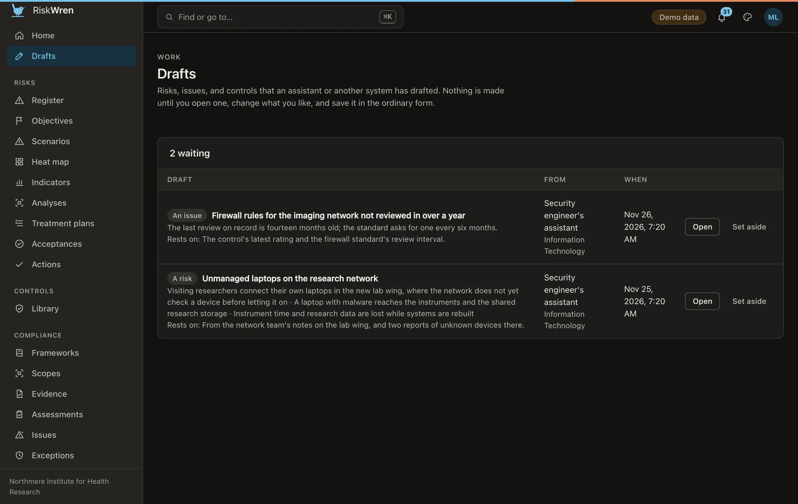

API
Everything the web app does, it does through a JSON API under /api/v1. This guide covers how to sign in, how answers and errors are shaped, how lists page, and what routes there are. The exact shape of every request and answer is in the OpenAPI document: openapi.json in this directory, or /api/openapi.json on a running server.
This release has no API tokens. A program signs in as an account, with that account's password, and holds a session as a browser does. Tokens scoped to a role arrive with integrations in a later release; see the roadmap.
Until 1.0, routes may change between releases. Changes are listed in the changelog.
Sign in#
curl -s -c cookies.txt -H 'Content-Type: application/json' \
-d '{"email": "you@example.org", "password": "…"}' \
http://127.0.0.1:8000/api/v1/sessionThe answer describes who you are, and sets a session cookie, riskwren_session:
{
"data": {
"account": {"id": 12, "name": "Your Name", "email": "you@example.org"},
"roles": ["manager"],
"permissions": {"…": true},
"units": {"manager": null},
"member_units": [4],
"has_password": true,
"csrf_token": "…"
},
"meta": {}
}In units, each scoped role lists the units it covers, or null for the whole organization.
GET /api/v1/session returns the same for the session you hold, or 401 if you hold none. DELETE /api/v1/session signs out.
Another system: tokens#
Another system uses the API with a token, made by an administrator under Admin → Other systems, and sent in a header instead of a cookie:
curl -s -H "Authorization: Bearer rwt_…" https://grc.example.org/api/v1/risks?limit=50A token acts as a role, never as a person: an auditor's reads everything, a manager's runs the program, an assessor's tests and reviews, a steward's works within one unit, and a member's reads what everyone may. A manager's or an assessor's token may be limited to one unit, and a steward's must be. A token is made to read only unless the administrator says otherwise; a change sent with one that may only read is refused with 403. An administrator's token cannot be made.
The token is shown once, when it is made; only its SHA-256 fingerprint is kept. It ends on its date (at most a year and a day away) or when it is withdrawn, after which it is refused with 401. What a token changes is in the history under its name (API token Ticketing), and when it was last used is shown beside it. A request with a token needs no CSRF token, because it carries no cookie.
Being told: webhooks#
An administrator registers a webhook under Admin → Other systems: a name, an https:// address, and what it is told of: * for everything, a family such as issue.*, or an event such as issue.close or risk.assess. The families are risk, control, issue, exception, incident, document, evidence, assessment, third_party, third_party_review, system, process, scope, and agreement. An event's name is what was done, as the history names it.
Within a minute of something happening, each webhook that wants it is sent a POST:
{
"event": "issue.close",
"at": "2026-11-28T14:02:11.402Z",
"seq": 10422,
"record": {"type": "issue", "ref": "ISS-0031", "url": "https://grc.example.org/issues/ISS-0031"}
}A message names the event and the record, and never says what the record says: the receiver asks the API, with a token, for what it may see. A restricted record is never named. One operation on one record makes one message. A new webhook is told of what happens after it is registered, not of the past.
Each message carries X-RiskWren-Event, X-RiskWren-Delivery, and X-RiskWren-Signature: t=TIME,v1=HEX, where HEX is the HMAC-SHA256, keyed with the webhook's secret, of the time, a dot, and the body exactly as sent. The secret is shown once, when the webhook is registered. To check a message, recompute the signature and compare it in constant time, and refuse one whose time is more than five minutes away from your own.
A webhook can be sent as the plain message above, as a ticket (title, description, link, with the event and record), for a service desk that makes a ticket of what it is sent, or as a chat message ({"text": "RiskWren: issue.close: ISS-0031 https://…"}), for a channel that takes an incoming message. Each still names only the event and the record.
An answer of 2xx is a delivery. Anything else, or no answer within ten seconds, is tried again after a minute, five minutes, half an hour, two hours, and twelve hours, and then given up. The latest deliveries, with how each went, are shown with the webhook, and kept for thirty days. A webhook can be paused, and sent a test message.
Reporting onto a control#
A scanner, a monitoring tool, or another system reports what it has found of a control with a token that acts as a manager, an assessor, or a steward, and may change things:
curl -s -X POST -H "Authorization: Bearer rwt_…" -H "Content-Type: application/json" \
https://grc.example.org/api/v1/controls/CTL-0042/reported \
-d '{"kind": "result", "outcome": "failed", "title": "12 servers missing patches",
"detail": "Hosts are listed in the scan.", "url": "https://scanner.example.org/r/9",
"observed_at": "2026-11-27T06:00:00Z", "scope": "SCP-0003"}'kind is result (with an outcome of passed, partial, or failed) or evidence (with no outcome, and usually a url). observed_at is when it was seen, with its time zone; it defaults to now and may not be in the future. scope is optional and must be a scope that uses the control. Only a token reports: a person records a result in an assessment.
What is reported is shown on the control at once, under its source's name, and counts for nothing until a person who assesses the control's unit, and does not own the control, confirms it under Compliance → From other systems. Confirming a failure raises an issue on the control (and the scope); confirming evidence files it with the control, for a year unless it says otherwise; confirming a pass keeps it as checked. Setting one aside keeps it on record with why. A report never replaces a person's result and never changes a rating by itself.
Asking whether something is in good standing#
Another process (purchasing, a data-access request, a deployment pipeline) asks whether a third party, a scope, or an exception is in good standing:
curl -s -H "Authorization: Bearer rwt_…" https://grc.example.org/api/v1/standing/third-party/TP-0007{"data": {"kind": "third-party", "ref": "TP-0007", "name": "Halden Research Partners",
"in_good_standing": false,
"reasons": [{"code": "review_overdue", "text": "Its review was due on 2026-10-01."}],
"as_of": "2026-11-27T15:04:00Z"}}The kinds are third-party, scope, and exception. A third party is not in good standing when it is not active (not_active), its review is overdue (review_overdue), or information is shared with it that no agreement of the kind the program requires covers (no_agreement). A scope is not when it is not active, a control it uses has failed a test (failing), or a critical or high issue about it is past its date (issues_overdue). An exception is in good standing only while it is in force; otherwise the reason is its state (requested, expired, and so on). The answer says nothing else of the record. A record the token may not see is not found.
Recipes#
Before buying from a supplier. Give the purchasing system an auditor's token that may only read. When a purchase names a supplier's third-party reference, it asks GET /standing/third-party/{ref} and holds the purchase for a person when the answer is false, showing the reasons' texts; when the answer is 404, the supplier is not on record, and the purchase goes to whoever adds third parties. The purchasing system learns that the review is overdue, never what the review found.
answer=$(curl -s -H "Authorization: Bearer $RISKWREN_TOKEN" \
"https://grc.example.org/api/v1/standing/third-party/$SUPPLIER_REF")
echo "$answer" | jq -e '.data.in_good_standing' > /dev/null || echo "Hold: $(echo "$answer" | jq -r '.data.reasons[].text')"Before granting access to data. A data-access request names the scope the data sits in (the research enclave, the clinical systems). The request process asks GET /standing/scope/{ref} and, when a control has failed a test or a high issue is overdue, sends the request to the security team instead of granting it. A request that rests on an exception (an unencrypted laptop allowed until a date) asks GET /standing/exception/{ref} and is refused once the exception is no longer in force.
Before a deployment. A pipeline that deploys into a scope asks the same question of the scope, and stops for a person rather than failing on its own: the answer is a reason to look, not a verdict.
Ticketing and chat. Register a webhook with the format A ticket at the service desk's incoming address, told of issue.*, and each issue raised or changed opens or updates a ticket whose link leads back to the issue. Register one with A chat message at a channel's incoming address, told of incident.report and exception.request, for the few things a team should see as they happen. Neither carries what the record says.
An assistant: the tool server#
riskwren tools is a Model Context Protocol server, over standard input and output, for an assistant on someone's own computer. It gives the assistant tools that call RiskWren's API with a token, so the assistant sees only what the token may:
| Tool | What it does |
|---|---|
search | Search every kind of record the token may see |
get_record | One record in full, by its reference |
risk_with_controls | A risk, with its ratings and the controls that bear on it |
scope_readiness | A scope: what it is held to, how far it meets it, and its open issues |
whats_overdue | Risks whose review is overdue, issues past their date, controls whose rating is stale |
draft_risk · draft_issue · draft_control | A draft, for a person to open, change, and save |
Make a token for it under Admin → Other systems: an auditor's that may only read is enough, because a token that may only read may still draft. Then tell the assistant to start the server, with the token in its environment and never on the command line:
{
"mcpServers": {
"riskwren": {
"command": "riskwren",
"args": ["tools", "--url", "https://grc.example.org"],
"env": {"RISKWREN_TOKEN": "rwt_…"}
}
}
}--no-drafts offers only the tools that read. The address must be https://, except on the same computer. An answer is cut short past 24,000 characters, so one record cannot fill a conversation. What the assistant does with what it reads is between it and whoever provides it, so choose one the organization trusts with what the token may see. The drafts it makes are in the history under the token's name, and when the token was last used is shown beside it.
Drafts#
A draft is a proposal, never a half-made record. It waits under Drafts for a person who may add that kind of record in its unit: a unit's steward or a manager for a risk or a control, and an assessor too for an issue. Open puts it in the ordinary form, where the person changes what they like and saves it, so every rule that applies to a record they make applies to this one; the draft is then marked as used, naming what was made. Set aside keeps it on record with why, and makes nothing.



curl -s -X POST -H "Authorization: Bearer rwt_…" -H "Content-Type: application/json" \
https://grc.example.org/api/v1/drafts \
-d '{"kind": "issue", "values": {"name": "Firewall rules not reviewed in a year",
"summary": "The last review is fourteen months old.", "severity": "moderate",
"org_unit_id": 4}, "why": "The firewall standard asks for one every six months."}'A risk draft may say name, summary, cause, event, consequence, and category; an issue draft name, summary, severity, and source_kind; a control draft name, statement, objective, kind, nature, and frequency. Each may say org_unit_id, and needs a name. Anything else is refused.
The contract#
docs/api-contract.json records every route, its parameters, and the fields its body takes, and which are needed. A release may add to it: a route, an optional parameter, an optional field. A change that would break a client (a route, a parameter, or a field taken away, or one that was optional made needed) fails the build unless it is made on purpose, and is then listed under Breaking in the changelog.
Changing things#
Every request that changes anything (POST, PUT, PATCH, DELETE) must carry the session's CSRF token in a header:
curl -s -b cookies.txt -H 'Content-Type: application/json' \
-H 'X-CSRF-Token: …' \
-d '{"name": "Freezer farm", "kind": "device", "criticality": "critical", "org_unit_id": 4}' \
http://127.0.0.1:8000/api/v1/systemsWithout it the answer is 403. If the request carries an Origin header, it must match the host, or the request is refused.
Editing a record someone else is editing#
Records carry a version. Send the version you read with a PATCH, and if someone else has changed the record since, the answer is 409 and nothing is saved. Read it again and decide what to do.
Answers#
Every successful answer has the same envelope:
{"data": …, "meta": {…}}data is one object or a list. meta carries what is about the answer and not in it: paging for a list, or a count of what else changed.
Times are UTC in ISO 8601. Dates with no time, such as a due date, are YYYY-MM-DD.
Errors#
Errors are problem documents (application/problem+json):
{
"type": "about:blank",
"title": "Unprocessable Entity",
"status": 422,
"detail": "The assessment was not recorded.",
"errors": [
{"location": ["rationale"], "message": "Say why, in a sentence or two. A rating is a judgment."}
],
"instance": "/api/v1/risks/RSK-0002/assessments"
}| Status | Meaning |
|---|---|
| 400 | The request could not be carried out as asked |
| 401 | Nobody is signed in, or the email address and password do not match |
| 403 | You are signed in but may not do this, or the CSRF token is missing. detail says which |
| 404 | No such thing, or none that you may see. The two are not told apart |
| 409 | A conflict: the record changed since you read it, or the thing is already so |
| 413 | The request is larger than 32 MB |
| 422 | A value is missing or not allowed. errors names each field |
| 429 | Too many failed sign-ins. Wait a few minutes |
| 503 | The database is unavailable |
Lists#
Every list route takes the same parameters:
| Parameter | Meaning |
|---|---|
q | Words to look for in the name, reference, or summary, or in what the record is called in another system |
unit | A unit's id. Includes every unit beneath it |
sort | A field name. Start with - for descending. The default is -updated_at |
limit | How many to return: 50 by default, 200 at most |
cursor | Where to continue from: next_cursor or prev_cursor from the last answer |
mine | true for only the records you are named on |
Each kind of record adds its own filters, such as standing, residual_rating, and category for risks. The OpenAPI document lists them.
A list's meta says where the page sits:
{"total": 180, "offset": 0, "next_cursor": "eyJvZmZzZXQiOjUwfQ", "prev_cursor": null}A list returns only what you may see, and total counts only that.
Routes#
Every route requires a signed-in account except those marked public. What a route allows beyond that depends on the record: its unit, its owners, and its visibility. See Running the program.
System and session#
| Route | What it does |
|---|---|
GET /health/live · GET /health/ready | Whether the server is up, and whether it can serve (public) |
GET /meta | Product name, version, branding, and palettes (public) |
GET · POST · DELETE /session | Who is signed in; sign in; sign out |
POST /session/password | Change your own password |
GET /sso/start · GET /sso/callback | The single sign-on round trip, for a browser (public; 404 unless it is set up) |
GET · PUT /session/preferences | How you want notices by email, where email is set up |
GET · POST /questionnaires · GET · PATCH /questionnaires/{key} | Questionnaires and their versions; a changed document is published as a new version (changing them is for those who run the program) |
GET · POST /campaigns · POST /campaigns/preview | Campaigns you run or may read; start one; count who one would ask |
GET /campaigns/{ref} · POST /campaigns/{ref}/remind · /close · /cancel | One campaign with its coverage by unit and items; remind those who have not answered; end it |
GET /campaign-items/{id} · POST /campaign-items/{id}/answer · /excuse | What one person is asked; answer it, as a draft or in full; take it out of the campaign |
GET · POST /indicators · GET · PATCH /indicators/{ref} · PUT /indicators/{ref}/owners · GET /indicators/{ref}/history | Indicators with where each stands; one with its readings, trend, and the risks it warns of |
GET · POST /documents · GET · PATCH /documents/{ref} · PUT /documents/{ref}/owners · GET /documents/{ref}/history | Policies, standards, procedures, and guidelines; one with the version in force, the one coming, and every published version |
POST · PATCH · DELETE /documents/{ref}/draft · POST /documents/{ref}/draft/file | Start the next version, change it, discard it, or send a file as its content |
POST /documents/{ref}/draft/submit · /decision · /withdraw · /publish | Send it to named people to approve; approve it or return it; take it back; publish it |
POST /documents/{ref}/review · /retire · /reinstate | Review it and keep it as it is; take it out of use; put it back |
GET /documents/{ref}/versions/{id} · GET …/versions/{id}/file · GET /documents/{ref}/compare?from=&to= | One version; its file; two versions side by side |
GET · POST /objectives · GET · PATCH /objectives/{ref} · PUT /objectives/{ref}/owners · GET /objectives/{ref}/history · PUT /risks/{ref}/objectives | Strategic objectives, each with the risks that name it; the objectives a risk threatens |
GET · POST /sessions · GET · PATCH /sessions/{ref} · PUT /sessions/{ref}/owners · GET /sessions/{ref}/history · POST /sessions/{ref}/held · /cancel | Committee sessions, with their agenda, decisions, attendees, and minutes |
POST /sessions/{ref}/items · PATCH · DELETE /sessions/{ref}/items/{id} · POST …/items/{id}/move · POST …/items/{id}/decision | Put an item on the agenda (a record's reference, or a topic), change it, take it off, move it, and record the decision, which shows on the record (decisions on any record) |
GET · POST /framework-packs | The frameworks that ship and which are loaded; load one by its key, or a whole pack (those who run the program) |
GET /frameworks/{key}/changes?from= · GET /frameworks/{key}/change?from=&code= · POST /frameworks/{key}/versions | What changed from an earlier version, and what uses it; one requirement in both, with the words that differ; start a new version of a framework of your own |
POST /scopes/{ref}/frameworks/{key}/move | Move a scope to a later version, carrying its decisions, exceptions, and the organization's crosswalks where the code is unchanged |
GET /frameworks/{key}/suggestions · POST …/suggestions/confirm · POST …/suggestions/set-aside | Crosswalks a publisher's mapping suggests; map one; set one aside |
GET · POST /agreements · GET · PATCH /agreements/{ref} · PUT /agreements/{ref}/owners · GET /agreements/{ref}/history | Agreements, open ones unless status=closed or all; one with what it covers, its terms, and the scopes they bind; change it, its dates, or its terms |
GET · POST /sites · GET · PATCH /sites/{ref} · PUT /sites/{ref}/owners · POST /sites/{ref}/links · DELETE /sites/{ref}/links/{link_id} · GET /sites/{ref}/history | The places work depends on, with their kind (from the site_kinds vocabulary) and address. A process or a system relies_on a site |
GET · POST /services · GET · PATCH /services/{ref} · PUT /services/{ref}/owners · POST /services/{ref}/links · DELETE /services/{ref}/links/{link_id} · GET /services/{ref}/history | What third parties provide; third_party names the provider by reference, and filters the list |
POST /third-parties/{ref}/contacts · PATCH /contacts/{contact_id} | The people at a third party who can be asked; contacts appear on the third party for those who keep it, assessors, and those who read everything |
GET /reviews · POST /third-parties/{ref}/reviews · GET · PATCH /reviews/{ref} · PUT /reviews/{ref}/owners · GET /reviews/{ref}/history | Due diligence reviews (status=open for those not concluded, late=true); start one with the questionnaire the tier names unless another is given; one with its link's state, its answers, and their concerns |
POST /reviews/{ref}/send · /withdraw · /conclude · /cancel | Send it to a contact through a new link (the address is in meta.link.url, this once, and emailed where email is set up); withdraw the link; record conclusion (approved, conditions, declined) and note; cancel it |
GET /assurance-kinds · GET · POST /third-parties/{ref}/assurance · POST /third-parties/{ref}/assurance/{document}/reviews | The kinds of report, opinions, and judgments; a third party's reports and certificates, with their state and latest review, and whether anything in date can be relied on; add one (then send its file to POST /evidence/{ref}/file); review one, with services, exceptions, responsibilities (each text, control by reference, and status), and reliance |
GET /portfolio?by=&period= | Figures by unit, category, framework, third_party, or causes, over a quarter, half, or year, each with the path and filters of the list it counts. GET /risks?added=FROM..TO, GET /issues?raised=, closed=, root_cause=, framework=, and GET /exceptions?framework= cut those lists the same way |
GET /leadership-reports · GET /leadership-reports/next?from=&to= · POST /leadership-reports · GET /leadership-reports/{ref} | The reports issued, the latest first; the next as it stands now, not stored (managers for the whole organization); issue it with title, summary, from, and to, freezing what it says with its fingerprint; one as it was issued, with check saying whether its fingerprint still matches what it says and what the history recorded (verified). Read by those who read everything, those who lead the whole organization, and whomever the program chooses; a record the reader may not see is withheld: it keeps its rating but loses its reference, name, unit, and owners, and withheld counts them |
GET /as-of?type=&on=&live= · GET /as-of/{ref}?on= | A register (risk, control, issue, exception, third_party) as it stood at the end of a day, rebuilt from the history: each record that existed then with its fields then and now and which changed (live=false for those not open or in use then as well); one record's fields then and now, its owners then and now, and how many changes there have been since |
GET /dossiers/{ref} · POST /dossiers/check | A dossier of a scope, a risk, or a third party, as a ZIP whose manifest.json lists each file's size and SHA-256 and carries a fingerprint (taking one is recorded in the history); check one sent as the request body (up to 32 MB): verified, the problems found, the manifest, and when and by whom the history says it was taken (recorded) |
GET /scopes/{ref}/security-plan · GET /scopes/{ref}/oscal/ssp?framework= · GET /scopes/{ref}/oscal/poam | The scope's system security plan as a page that prints by itself; the same in OSCAL 1.1.2 against one framework it is held to (needed when it is held to more than one); its plan of action and milestones in OSCAL. Each is a download |
GET · POST /scenarios · GET · PATCH /scenarios/{ref} · PUT /scenarios/{ref}/owners · PUT /scenarios/{ref}/subjects · GET /scenarios/{ref}/history | Scenarios (risk= for those that touch a risk or process); one with what it touches and the simulation of its risks' estimates; conclude one with status and conclusion; say which risks and processes it touches |
GET /risks/{ref}/bow-tie · GET · POST /risks/{ref}/estimate | A risk's causes, preventive controls, event, mitigating controls, and consequences; its estimate in ranges with its simulation and the estimates before it; estimate it anew (frequency_low, _likely, _high, loss_low, _likely, _high, currency, assumptions) |
GET /audit/universe?kind=&left_out= · GET · PUT /audit/universe/{kind}/{key} | Everything worth auditing, highest ranked first, each with the parts of its ranking; one thing (kind is unit, process, system, third_party, or scope; key a unit's id or the record's reference); what audit says about it: adjustment with adjustment_reason, last_audited_on with last_audit_note, left_out with left_out_reason (auditors) |
GET · POST /audit/plans · GET /audit/plans/{ref} · POST /audit/plans/{ref}/engagements · /approve · /close · POST /engagements/{ref}/drop · /restore | Plans for a period, drafted by auditors; one with its engagements and their counts; plan an engagement on a thing with its reason; approve with a note (an auditor who did not draft it, or a leader of the whole organization); close; drop with a reason, or restore |
GET /auditors · GET /engagements/{ref} · POST /engagements/{ref}/start · /advance · /workpapers · PUT /workpapers/{paper_id} · POST /workpapers/{paper_id}/sign-off · /notes · POST /review-notes/{note_id}/answer · /clear | The auditors who may be on a team; an engagement, whose work (workpapers, scope_note) only its team sees until it is reported (restricted); start it with a lead, members, and scope_note; move it on (to reported with summary and opinion); add a step; record done, found, and evidence; sign off; add, answer, and clear review notes |
POST /engagements/{ref}/requests · GET /audit/requests/{request_id} · POST /audit/requests/{request_id}/answer · /accept · /return | Ask the audited for something (what, assignee, due_on); a request, for the person asked (with the evidence already on_file they may answer with) or the team; answer it (answer, evidence); accept the answer, or send it back with a reason |
POST /engagements/{ref}/findings · GET /audit/plans/{ref}/committee-report | Raise a finding as an issue (name, summary, severity, owner_id, subjects), whose closure an auditor confirms through POST /issues/{ref}/validation; a plan's engagements with their opinions, the findings by severity, and the findings and actions past their date |
GET · POST /audit/outside · POST /audit/outside/{access_id}/revoke · GET /outside | Outside access given, and what may be opened; give a named person (name, organization, email, purpose) read-only access to one reported engagement or one scope (kind, ref) for days (at most 90), the address being in meta.link.url this once; withdraw it; and, with no account and the link in the X-RiskWren-Access header, what it opens, each use recorded in the history |
GET /resilience · GET · POST /processes/{ref}/impact · GET · POST /systems/{ref}/recovery · GET · POST /services/{ref}/recovery · GET · POST /sites/{ref}/recovery · GET · POST /third-parties/{ref}/recovery | Every analysed process with its needs and shortfalls; a process's business impact (impacts, each after and level; recovery_hours; data_loss_hours; minimum) and each dependency checked against it; what a system, service, site, or third party can deliver (recovery_hours, data_loss_hours, which a site leaves out, basis) and the processes that need it, with, for a site, the systems at it |
GET /measures | Every defined measure, with what it counts, its figure for the caller, the list it opens (path and filters), and the organization's trend from the daily snapshots (managers, auditors, administrators) |
GET /coverage · PUT /agreements/{ref}/parties | Every stop the person may see, each with what is shared, through what, and the rules it fails (needs), with the program's sharing rules; say which third parties an agreement is with (with on the agreement). Information, third parties, and services carry their own stops |
POST /third-parties/{ref}/call-review · /offboarding · /offboarding/steps/{step} · /offboarding/cancel · POST /reviews/{ref}/findings | Call for a review now (event, note); end the relationship and record each step (access, information, agreements, attestation) with a note; raise a finding from a review as an issue. An issue's action takes contact_id for one done by a third party's contact. GET /third-parties?review=due (or soon) cuts the list by review date |
POST /respond/files?name= | For the holder of a link: send a report with the answers, as the request body, up to ten |
GET · PUT /respond · POST /respond/submit | For the holder of a link, with no account: the token goes in the X-RiskWren-Link header, never in the address. What they are asked; save the answers; send them. 404 for a token that leads nowhere, 410 for one that expired, was withdrawn, or was used, and 429 after too many unknown tokens from one address |
GET /tiers · GET · POST /third-parties/{ref}/tiering | The program's tiers with their rules; a third party's tiering, with the questions, what the inventory suggests, and its tierings; record one, with tier and rationale where it differs from the rules'. GET /third-parties?tier= cuts the list to a tier, or none |
PUT /agreements/{ref}/covers · POST /agreements/{ref}/close · /reopen | Say what it covers (systems, information, and scopes, by reference); close it with the reason; open it again |
GET /documents/{ref}/governs · PUT /documents/{ref}/controls · DELETE …/controls/{id} · PUT /documents/{ref}/requirements · DELETE …/requirements/{id} | The controls a document directs and the requirements it answers; add one (or change its note), or take it off. A requirement (GET /frameworks/{key}/requirement) and a control (GET /controls/{ref}) show the documents from their side |
PUT /documents/{ref}/audience · GET /documents/{ref}/acknowledgments | Who it applies to (everyone, or units and roles); who has acknowledged the version they must, by unit and person (for those who keep it, assessors, and those who read everything) |
GET /library?q=&all= · GET /library/{ref} · POST /library/{ref}/acknowledge | The published documents that apply to you, or every one you may read, found by their words; one as it is in force; say you have read it |
POST /program/preview · POST /program/publish | Which open risks a change to the scoring method, appetite, or cadences would move; make the change (those who run the program) |
POST /risk-categories · PATCH /risk-categories/{key} | Add a risk category; rename, describe, retire, or move one |
GET /admin/vocabularies · PUT /vocabularies/{name} | Every vocabulary with what may be changed in it; rename, reorder, add to, or retire its values |
GET · POST /risk-analyses · POST /risk-analyses/preview · GET · PATCH /risk-analyses/{ref} | Risk analyses; start one over a scope or a unit; how many questions one would have; one with its progress and everything it considered |
GET /risk-analyses/{ref}/assets/{subject} · POST /risk-analyses/{ref}/items/{id} · POST …/assets/{subject}/rest | One thing with each threat and the risks that might answer it; answer one question; say none of the others apply |
POST /risk-analyses/{ref}/close · /reopen | Close an analysis with what it found; reopen it |
GET /search | Every kind of record, and actions, by words; only what you may open |
GET · POST /views · PATCH · DELETE /views/{id} | Saved views of a list: yours and the shared ones |
GET /tidy · GET /similar · POST /tidy/not-duplicates | What records are missing, likely duplicates, and what people who have left still hold; what a new name might already be; say two records are different things |
GET /accounts/{id}/holdings · POST /accounts/{id}/handover | What a person answers for, with who is standing in; pass it on |
POST /indicators/{ref}/readings · PUT /indicators/{ref}/risks · GET /risks/{ref}/indicators | Record what an indicator stood at on a day; say which risks it warns of; the indicators that warn of a risk |
POST /questionnaires/check | Check a document without saving it, and see which questions given answers would show |
POST /questionnaires/{key}/responses · GET /responses/{id} | Answer a questionnaire, as a draft or in full; read answers as they were asked |
GET /jobs · POST /jobs/{key}/run · PUT /jobs/{key} | Scheduled work: how it is going, run one job now, pause or resume one (administrators) |
GET · POST /admin/tokens · POST /admin/tokens/{token_id}/revoke | Tokens for other systems: list them, make one (name, role, org_unit_id, read_only, days; the token is in meta.token this once), withdraw one (administrators) |
GET · POST /admin/webhooks · PATCH · DELETE /admin/webhooks/{hook_id} · POST /admin/webhooks/{hook_id}/test | Webhooks with their latest deliveries; register one (name, url, events, format; the secret is in meta.secret this once), change, pause or resume (active), remove, or send a test (administrators) |
GET · POST /controls/{ref}/reported · GET /reported · POST /reported/{id}/confirm · POST /reported/{id}/set-aside | What other systems report of a control: report one (a token acting as a manager, an assessor, or a steward); see a control's; what waits for you to decide; confirm one (note, severity) or set it aside (note), as a person who assesses the control's unit and does not own the control |
GET /standing/{kind}/{ref} | Whether a third party, a scope, or an exception is in good standing, with the reasons by code |
GET · POST /drafts · GET /drafts/{id} · POST /drafts/{id}/use · POST /drafts/{id}/set-aside | Drafts: propose one (kind, values, why; a token that may only read may too); those waiting for you; one draft; mark one as used, naming the record you made from it (ref); set one aside (note) |
POST /assistant/summary · POST /assistant/draft-risk | Only when the assistant is turned on: a summary of a record (ref), or a risk drafted from a description (description, org_unit_id), as whoever asks; 429 past the day's limit, 502 when the provider fails or runs out of time |
GET /admin/assistant · POST /admin/assistant/check | Only when the assistant is turned on: how it is set up, with its log; check that the provider answers (administrators) |
GET /mail · POST /mail/test | How email is set up and how it is doing; send yourself a test message (administrators) |
GET /sso · POST /sso/check · PUT /sso/mappings | How single sign-on is set up; whether the provider answers; which of its roles give which roles here (administrators) |
People and units#
| Route | What it does |
|---|---|
GET /accounts · POST /accounts | Find people; add an account (admin) |
GET · PATCH /accounts/{id} | One account; change it |
PUT /accounts/{id}/roles · PUT /accounts/{id}/units | Set its roles and units (admin) |
POST /accounts/{id}/password | Set a password for someone (admin) |
GET /roles | The roles and what each allows |
GET /units · POST /units · GET · PATCH /units/{id} | The organization's units |
POST /imports/units · POST /imports/people | Import from CSV, with dry_run (admin) |
The inventory, risks, and controls#
{records} is one of processes, systems, third-parties, information, risks, or controls. A record is addressed by its reference, such as SYS-0036.
| Route | What it does |
|---|---|
GET /{records} · POST /{records} | List; add (a steward of the unit, or a manager) |
GET · PATCH /{records}/{ref} | One record with everything about it; change it. external_refs sets what it is called in other systems |
PUT /{records}/{ref}/owners | Name its owners, delegates, and contacts |
GET /{records}/{ref}/history | Its history |
POST /{records}/{ref}/links · DELETE /{records}/{ref}/links/{id} | Link two inventory records; unlink them |
Risks#
| Route | What it does |
|---|---|
GET /risk-library | Common risks to start from |
GET · POST /risks/{ref}/assessments | Its assessments; record a new one |
PUT /risks/{ref}/subjects | Say which processes, systems, and third parties it concerns |
PUT /risks/{ref}/escalation | Escalate it to a unit above, or take it back |
GET · PUT /risks/{ref}/controls · DELETE /risks/{ref}/controls/{control_ref} | The controls that bear on it, with what they suggest; link one; unlink one |
Controls#
| Route | What it does |
|---|---|
GET /control-library | Common controls to start from |
GET · POST /controls/{ref}/ratings | What is known about a control; record a new rating. Refused while a test result still holds |
GET · PUT /controls/{ref}/requirements · DELETE /controls/{ref}/requirements/{id} | The requirements a control answers; map one, in full or in part; unmap one |
POST /controls/{ref}/requirements/suggested | Add the mappings the library suggests for it |
Treatment#
| Route | What it does |
|---|---|
GET /risks/{ref}/treatment | The response, plans, acceptances, and whether you may accept it |
PUT /risks/{ref}/response | Record the response and the reason |
POST /risks/{ref}/plans · GET /plans · GET /plans/{ref} | Open a plan; list plans; one plan with its actions |
POST /plans/{ref}/cancellation · POST /plans/{ref}/actions | Cancel a plan; add an action |
GET /actions · PATCH /actions/{ref} | List actions; progress, finish, reassign, or reschedule one |
POST /risks/{ref}/acceptances | Accept the risk (a leader with the authority) |
GET /acceptances · POST /acceptances/{id}/withdrawal | List acceptances; withdraw one |
Frameworks and scopes#
A requirement is addressed by a query, since codes such as 164.308(a)(1)(ii)(A) do not belong in a path: /frameworks/{key}/requirement?code=….
| Route | What it does |
|---|---|
GET /frameworks · POST /frameworks | The frameworks on record; add one of your own (a manager for the whole organization, or an administrator) |
GET · PATCH /frameworks/{key} | One framework; change or retire one of your own |
GET /frameworks/{key}/requirements | One level of its tree with parent, or a search with q or baseline |
GET · PATCH · DELETE /frameworks/{key}/requirement | One requirement in full, with the controls that answer it; change or remove one of your own |
POST /frameworks/{key}/requirements · POST …/requirements/paste | Add a requirement; add many from pasted lines, with dry_run |
GET /frameworks/{key}/coverage | How many requirements have a control, and which have none |
GET /scopes · POST /scopes · GET · PATCH /scopes/{ref} | Scopes, as any other record, with /owners and /history |
PUT /scopes/{ref}/members | What is inside the boundary: units and inventory records |
PUT /scopes/{ref}/frameworks · DELETE /scopes/{ref}/frameworks/{key} | Hold it to a framework, from a baseline or from every requirement; release it |
GET · PUT /scopes/{ref}/requirements | The statement of applicability, with framework, state, and q; leave a requirement out or bring it back |
GET · PUT /scopes/{ref}/controls · DELETE /scopes/{ref}/controls/{id} | How each control is done in the scope; use one or say where it stands; stop using one |
GET /scopes/{ref}/controls/candidates · GET …/offered · POST …/inherited | Controls that answer its requirements; controls other scopes offer; inherit one, whole or shared |
GET /scopes/{ref}/plan-of-action | The open issues that bear on it, each with its actions |
Evidence, assessments, and tests#
| Route | What it does |
|---|---|
GET /evidence · POST /evidence · GET · PATCH /evidence/{ref} | Evidence items, with state (current, expiring, stale), /owners, and /history |
PUT /evidence/{ref}/subjects | Say which controls and scopes it supports |
POST · GET /evidence/{ref}/file | Send its file as the request body; download it. A download is recorded |
GET /evidence-for/{ref} | The evidence attached to a control or a scope |
GET /assessments · POST /assessments · GET · PATCH /assessments/{ref} | Assessments; start one of a scope (an assessor or a manager); one with its tests |
POST /assessments/{ref}/tests · PATCH · DELETE /tests/{id} | Add a control to it; plan a test; take one out |
POST /tests/{id}/results | Record what a test found (not for a control you own) |
POST /results/{id}/review | Confirm a result, or return it (not your own result, nor for a control you own) |
POST /assessments/{ref}/completion · POST …/cancellation | Close it once every test counts; abandon it |
Issues, exceptions, and notices#
| Route | What it does |
|---|---|
GET /issues · POST /issues · GET · PATCH /issues/{ref} | Issues, with status (or live), severity, source_kind, about, age, and overdue; raise one |
PUT /issues/{ref}/subjects · POST /issues/{ref}/actions | Say what it is about; add an action |
POST /issues/{ref}/due-date | Move its date, with the reason |
POST /issues/{ref}/closure | Propose closure: what was done, the root cause, and evidence |
POST /issues/{ref}/validation | Confirm the closure, or send it back (an assessor or a manager who does not own it) |
POST /issues/{ref}/cancellation · POST /issues/{ref}/reopening | Withdraw one raised in error; open a closed one again |
GET /exceptions · POST /exceptions · GET · PATCH /exceptions/{ref} | Exceptions, with state; ask for one to a control, or to a requirement within a scope |
POST /exceptions/{ref}/decision | Approve or refuse it (a leader or a manager who did not ask) |
POST /exceptions/{ref}/withdrawal | Take back a request, or end an exception early |
GET /incidents · POST /incidents · GET · PATCH /incidents/{ref} | Incidents, near misses, and concerns you may see, with status (or live), kind, category, severity, about, and reported (yours); report one with kind, name, summary, occurred_on, location, and org_unit_id. Its reporter sees everything: false: what they reported, where it stands, and what is said to them |
POST /incidents/{ref}/triage · PUT /incidents/{ref}/owners | Triage it (a manager, or an assessor for its unit): category, severity, org_unit_id, subjects (references), and handler_id; set its handlers |
PUT /incidents/{ref}/learning · POST /incidents/{ref}/losses · POST /incidents/{ref}/issues | What it taught: the risks it realized and the controls that failed or held (references), its root_cause, and its lessons; record a cost (kind, amount, currency, note); raise an issue with the incident as its source. Its handlers and those who triage it |
GET /incidents/summary | The incidents you may see from the last year: how many of each kind and category, what they cost, and the risks realized and controls that failed most. A risk's and a control's own answers carry incidents: those that realized it, or in which it failed or held, and what they cost |
GET · POST /incidents/{ref}/breach · POST /incidents/{ref}/notifications | Its breach assessment: the current one, what each rule that applies requires and by when (obligations), the notifications made, and the earlier assessments; assess it again with discovered_at, information, people, most_in_one_state, secured, exception, factors, conclusion, rationale, and regimes; record a notification under one of its regimes and duty. Not for a reporter who sees only their report |
GET /continuity · GET /continuity/{ref} · PUT /continuity/{ref}/covers | Every continuity plan (a document of the kind plan) and the analysed processes none restores; one plan with the version in force, what it restores and what that relies on, whom to call, its exercises, and when it is next due; say which processes it restores |
POST /continuity/{ref}/exercises · POST /continuity/{ref}/exercises/{exercise_id}/issues · GET /continuity/{ref}/offline | Record an exercise (kind, held_on, scenario, participants, outcome, result, achieved_hours); raise a finding of one as an issue; the version in force as one HTML file, for when the systems are down |
GET /privacy · POST /privacy/reviews/{item_id} | Every process and system whose data class needs a privacy impact assessment, and where each stands; review an answered one (an assessor or a manager for its unit), with a note |
PUT /incidents/{ref}/case | Make it a restricted case (restricted), known only to its handlers, the accounts named in members, whoever restricted it, and its reporter; or lift the restriction. For its handlers, and for those who triage it and are named on it |
POST /incidents/{ref}/messages · POST /incidents/{ref}/close · POST /incidents/{ref}/reopen · GET /incidents/{ref}/history | Write on it, shared with the reporter or a note; close it with a note saying how it ended; reopen it; its history, for all but a reporter who sees only their report |
GET · POST /anonymous-reports · POST /anonymous-reports/follow-up · POST /anonymous-reports/messages | With no account, where reporting without a name is open (404 where it is not): whether it is open; report something, getting a code this once; with the code, where it stands and what has been said; add to it. Nothing about who sends them is kept, failed codes are not counted by address, and at most 30 reports an hour are taken (409 after) |
GET /notices · GET /notices/count · POST /notices/read | What has been assigned to you or decided for you; how many are unread; mark them read |
Import and export#
| Route | What it does |
|---|---|
GET /exports/{list} | Any list as format=csv or format=json, with that list's own filters. {list} is a record list's name, or actions, plans, acceptances, requirements (with framework), or statement (with scope and framework). Recorded in the history |
POST /imports/records/{records}/columns | Send a CSV; the answer says which column is taken for which field |
POST /imports/records/{records} | Import processes, systems, third parties, information, risks, or controls from CSV, with dry_run (the default) and mapping |
POST /imports/requirements/{key}/columns · POST /imports/requirements/{key} | The same, for the requirements of one of your own frameworks |
The program and reports#
| Route | What it does |
|---|---|
GET /program | Categories with appetite, the scoring method, cadences, and the acceptance table |
GET /program/fields · PUT /program/fields/{type_key} | The fields of the organization's own on each kind of record; set those of one kind (fields, each with key, label, kind, choices, help, required). A record takes their values as custom |
PATCH /risk-categories/{key} | Set a category's appetite (a manager for the whole organization) |
GET /vocabularies | The lists of values records choose from |
GET · PUT /admin/visibility | How much of the register everyone sees |
GET · PUT /admin/anonymous-reporting | Whether reporting without a name is open; only an administrator opens or closes it |
GET · PUT /admin/leadership-readers | Who reads the leadership reports, beyond those who always do: reach (executives, organization, or leaders) and people, the accounts named as readers |
GET · PUT /admin/branding and its images | Appearance (admin) |
GET /home | What is waiting on you |
GET /heat-map | Risks by likelihood and impact, with kind, unit, and category |
GET /dashboard | Where the register stands, with unit. Each figure comes with the filters of the list it counts |
GET /compliance | Readiness by scope and framework, issues by severity and age, evidence, exceptions, and assessments in progress, with unit |
GET /graph/{ref} | A record and everything joined to it, in groups |
GET /history | Every change, newest first, with actor, about, kind, since, until, and before (managers, auditors, and administrators) |
What the API will not do#
- It never returns a record you may not see, and never counts one.
- It never edits an assessment, a control rating, a test result, or an acceptance. Each is superseded by a new one.
- It never lets a person record or confirm a test result for a control they own, confirm the closure of an issue they own, or decide an exception they asked for.
- It never imports a rating. A file can say what a risk or a control is, and not how it has been judged.
- It never changes the history. There is no route that does.